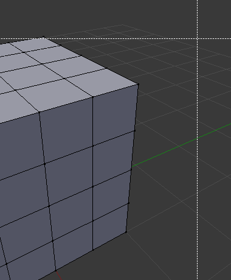

Selecting¶
By default Blender uses the LMB to select items in the Blender window. Alternatively, the RMB can be used instead by changing the Preferences. Blender has several selecting tools that can be used across the different editors.
Selection Tools¶
Select Regular¶
Reference
| Hotkey: | LMB |
|---|
Clicking on an item selects it, using modifier keys you can perform other operations.
Select Box¶
Reference
| Menu: | |
|---|---|
| Hotkey: | B |
To activate the tool, press B or click and drag LMB. With Select Box you draw a rectangle while holding down LMB. Any item that lies even partially within this rectangle becomes selected. If any item that was last active appears in the selection it will become active.
For deselecting items, use MMB.

Start. |

Selecting. |

Complete. |
{kind=link}
Select Circle¶
Reference
| Menu: | |
|---|---|
| Hotkey: | C |
Select Circle C is used by moving with dotted circle through item with LMB. You can select any item by touching of the circle area. It is possible to dynamically change the diameter of circle by scrolling Wheel or with NumpadPlus and NumpadMinus as seen in pictures below. Deselection is under the same principle – MMB.

Start. |

Selecting. |
{kind=link}
Select Lasso¶
Reference
| Hotkey: | Ctrl-RMB |
|---|
Lasso select is used by drawing a dotted line around item to be selected. To use this hold Ctrl-RMB and simply draw around the items you want to select.
Lasso select adds to the previous selection. For deselection, use Shift-Ctrl-LMB.

Start. |

Selecting. |
{kind=link}
Selecting Modes¶
Reference
| Tool: | Select Tools |
|---|---|
| Panel: |
Each tool has some sort of mode to configure how to tool interacts with existing selections. Note that not every selection tool supports each of these modes.
- Set
- Sets a new selection ignoring any existing selections.
- Extend
- Adds newly selected items to the existing selection. The selection can also be extended by Shift-LMB.
- Subtract
- Removes newly selected items from the existing selection. Items can be removed from the selection by Shift-LMB already selected items.
- Invert
- Selects non-selected items and deselects existing selection. The selection can also be inverted by Ctrl-I.
- Intersect
- Selects items that intersect with existing selection.